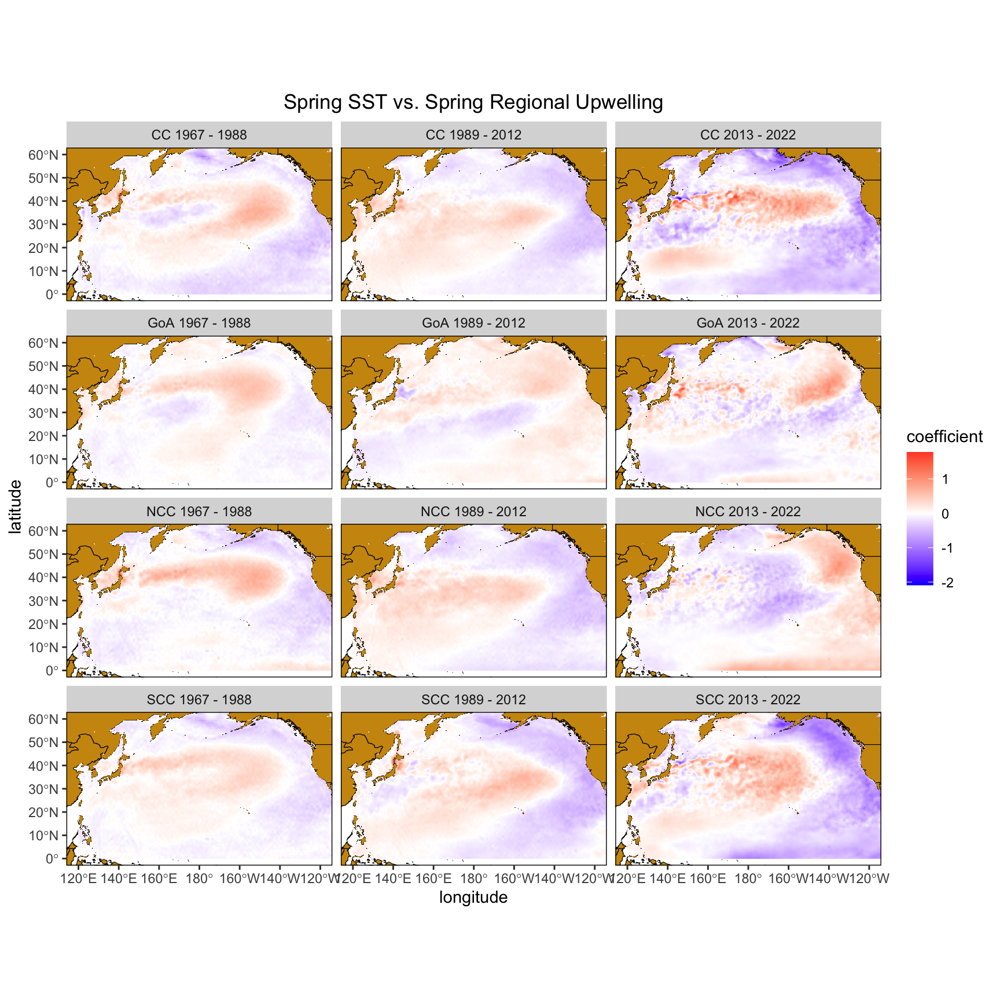
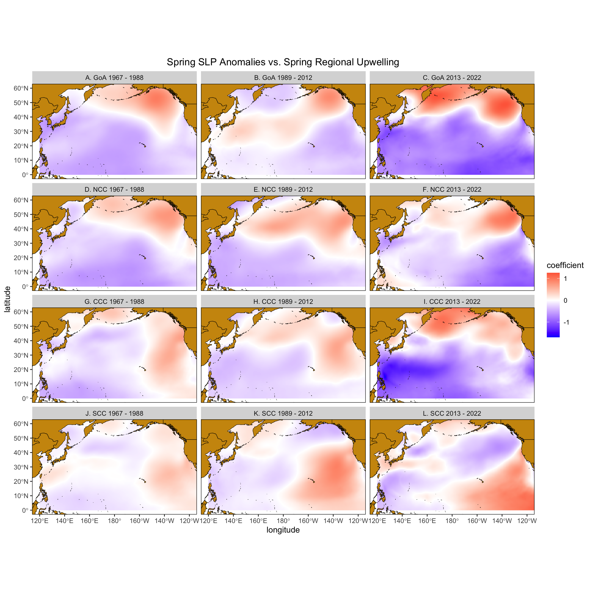

Analysis Summary
Data Setup
Upwelling and Atmospheric Forcing
Figure X: Correlations between regional upwelling (regions correspond Bakun indices described on map) and sea surface temperature. These correlations are based on three time periods: 1967-1988, 1989 - 2012, 2013 - 2022. 1988 marks a shift in Aleutian low variability, and increase in Winter SST anomaly, and a change in the correlation between PDO - NPGO (see Litzow et al. 2020 PNAS). This period also marks a change in upwelling in upwelling anomaly. 2013 marks an increase in both spring and winter SST with some evidence for changed in NPGO, PDO, and ENSO but no apparent change in upwelling anomaly.

Figure X Interpretation: In the southern California Current and central California Current there is a strengthening between basin-wide SST patterns and upwelling. These spatial relationships resemble the PDO and indicate a potential strengthening of the the relationship between the PDO and upwelling in the CCC and SCC regions. Notably, in the 2013 - 2022 period CCC seems to be dominated more by and NPGO - like forcing pattern compared to the two earlier eras. In contrast, the relationship between basin-wide SST patterns and upwelling dynamics in the NCC demonstrate PDO-like patterns throughout time, but show a sign reversal in the 2013-2022 period indicating SST patterns that were previously conducive to upwelling conditions actually produce downwelling conditions in the most recent era. Similarly, the GOA showed evidence of PDO dominated relationship in the earliest era,but it appears to be somewhere between a PDO-NPGO pattern during the MHW era.
Altogether, the relationship between basin wide SST and upwelling has changed in the past decade which is likely due at least partially to global trends in SST (see SOM models). This, combined with the changing correlations between NPGO-PDO mean the interpretation of NPGO and PDO for upwelling conditions is also changing, and may not reflect these indices may not reflect the same ecologically important conditions that have been used in the past.
Figure Y: Correlations between sring regional upwelling (regions correspond Bakun indices described on map) and winter sea level pressure. These correlations are based on three time periods: 1967-1988, 1989 - 2012, 2013 - 2022. 1988 marks a shift in Aleutian low variability, and increase in Winter SST anomaly, and a change in the correlation between PDO - NPGO (see Litzow et al. 2020 PNAS). This period also marks a change in upwelling in upwelling anomaly. 2013 marks an increase in both spring and winter SST with some evidence for changed in NPGO, PDO, and ENSO but no apparent change in upwelling anomaly.
